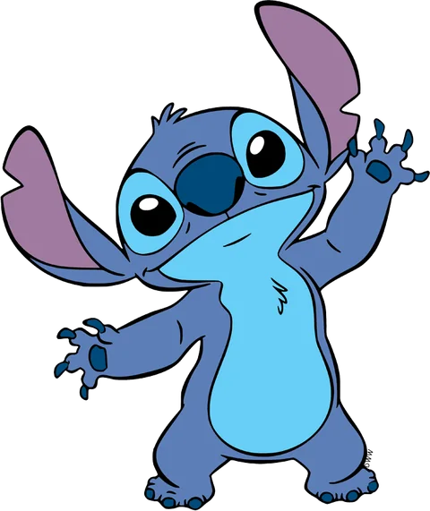
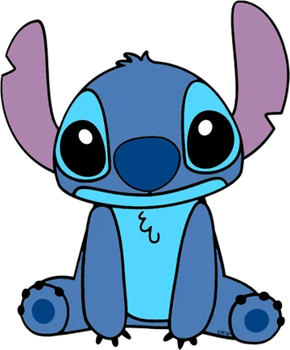
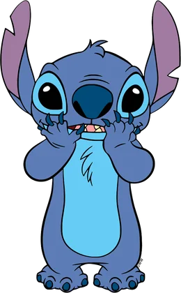

Les lettres de Stitch
Il en a caché neuf dans le sable. Touche une enveloppe pour l’ouvrir, dans l’ordre que tu veux. La dernière est fermée à clé…
Aucune lettre ouverte

Aloha,
kuʻu ipo · « ma chérie », en hawaïen
Il en a caché neuf dans le sable. Touche une enveloppe pour l’ouvrir, dans l’ordre que tu veux. La dernière est fermée à clé…


